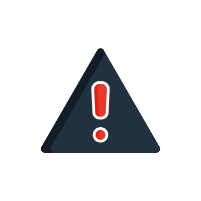

<ion-header translucent>
  <ion-toolbar>
    <ion-title><strong>{{ title }}</strong></ion-title>
    <ion-buttons slot="end">
      <ion-button (click)="dismiss(null)">
        <ion-icon name="close-circle" color="danger" style="font-size: 1.8rem;"></ion-icon>
      </ion-button>
    </ion-buttons>
  </ion-toolbar>
</ion-header>
<ion-content [style]="getModalStyle()">
  <div style="padding: 0.5rem;">
    <div *ngIf="device.minLevelReached!==''" [style]="getContentColor()" class="animated pulse">
      <strong>{{message}}</strong>
    </div>
    <div style="background: #223240; border-radius: 8px; border: solid 0.125rem #858484;">
      <ion-row *ngIf="device.minLevelReached!=='' || device.mode else notConnectionBlock">
        <ion-col size="4" *ngFor="let button of buttons;">

          <ion-button [style]='getButtonStyle(button)' (click)="setOnclosePayload(button.value)"
            [disabled]="button.value === device.mode.toUpperCase()">
            <ion-icon *ngIf="button.icon" [name]="button.icon"></ion-icon>
            
          </ion-button>

          <p *ngIf="button.value !== device.mode.toUpperCase() else elseBlock"
            style="color: #FFFFFF; text-align: center; font-size: 10px;"><strong>{{ button.caption }}</strong></p>
          <ng-template #elseBlock>
            <p [style]="getSelectedModeStyle(button)">
              <strong> {{ button.caption }}</strong>
            </p>
          </ng-template>
        </ion-col>
      </ion-row>
    </div>
  </div>

  <ng-template #notConnectionBlock>
    <div style="text-align: center; width: 100%;">
      
      <div style="text-align: center; padding-top: 5%; padding-bottom: 30%; width: 100%;">
        No se dispone de conexión con el dispositivo.
      </div>
    </div>
  </ng-template>
</ion-content>